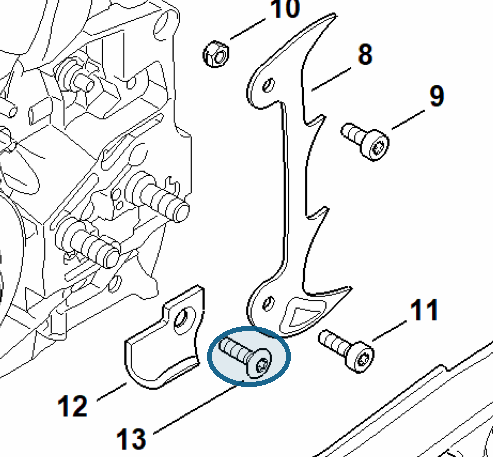

Countersunk screw M5x18-10.9
9061 373 0982
MS 462 — chain catcher
Secures chain catcher 1142 656 7700 (item 12) to the crankcase.
Item 13 Qty listed: 1

MS 462 C-M Z spare-parts list, 10/29/2024. Drawing p. 17; parts table p. 18.
9061 373 0982
Secures chain catcher 1142 656 7700 (item 12) to the crankcase.
Item 13 Qty listed: 1

MS 462 C-M Z spare-parts list, 10/29/2024. Drawing p. 17; parts table p. 18.